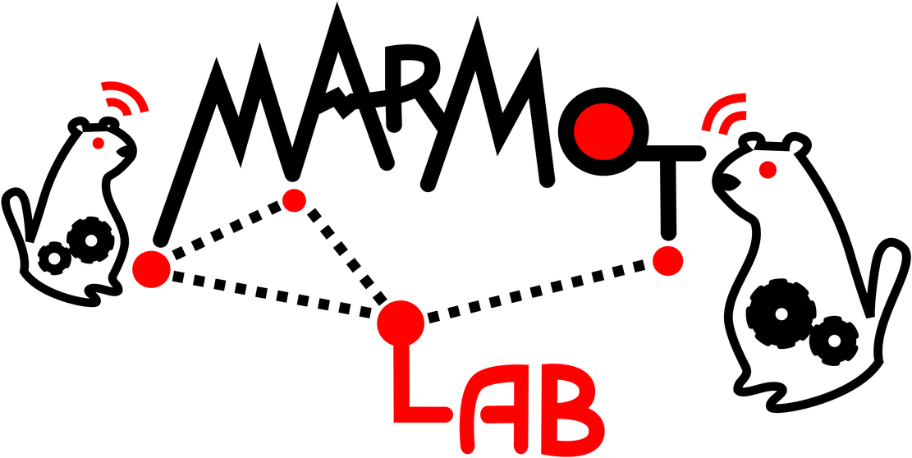
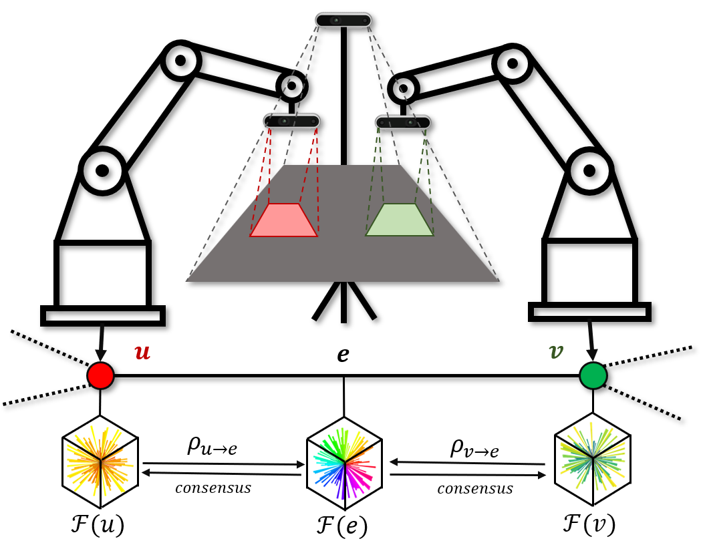
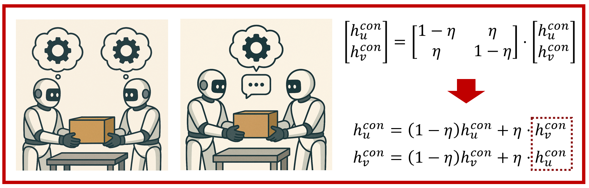
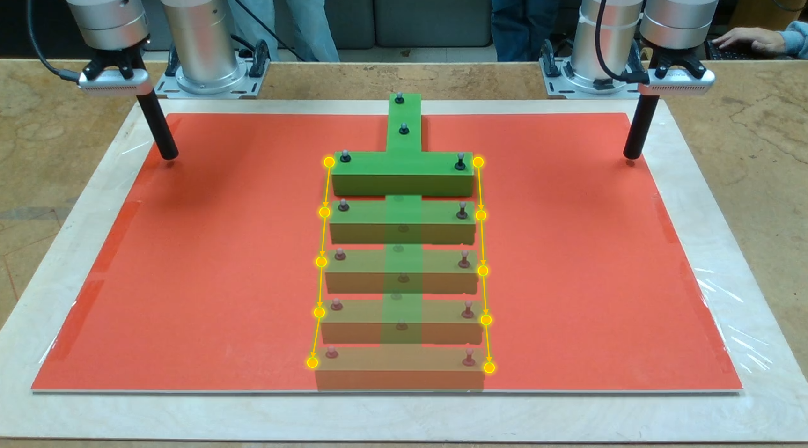
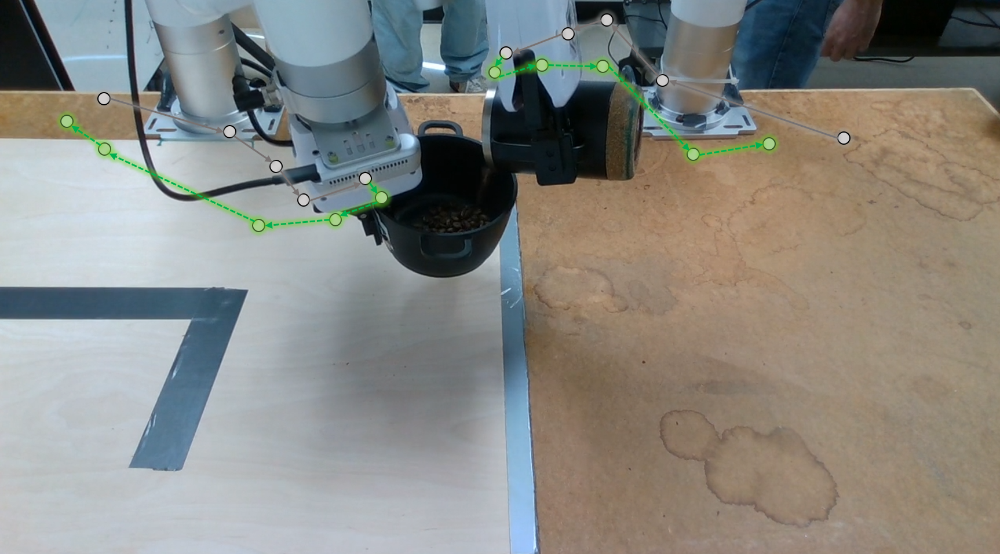
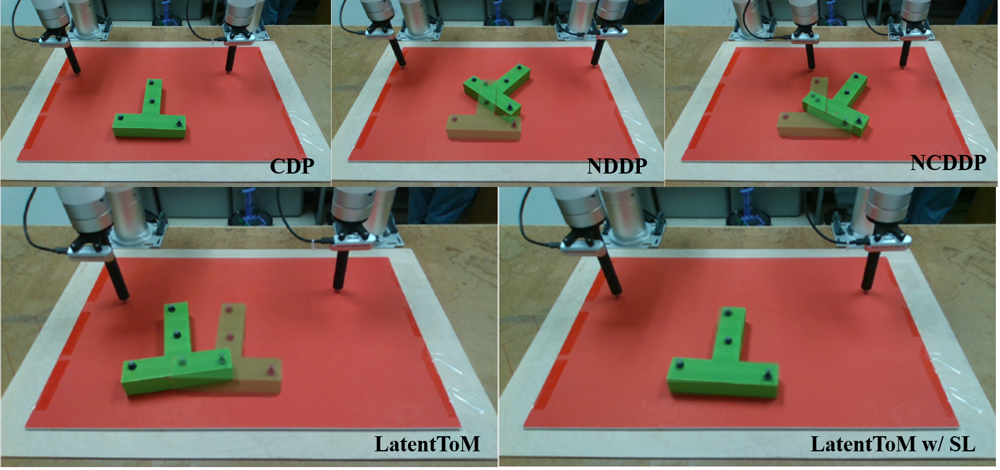
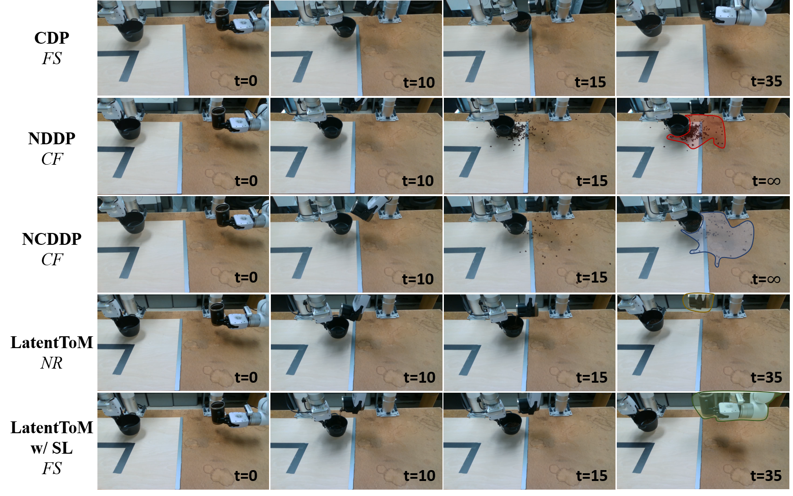

Decentralized by design
Each robot acts from its own perception and computation, without relying on a central controller.
Decentralized intelligence for cooperative robots
A Decentralized Diffusion Architecture for Cooperative Manipulation
Robots learn a shared latent understanding of one another—coordinating complex manipulation with or without explicit communication.
1 National University of Singapore 2 Stanford University

The idea
Each robot models what its partner knows, building alignment from different viewpoints without sacrificing decentralized control.

Abstract
LatentToM is a decentralized diffusion policy for collaborative robot manipulation. Each robot maintains an ego embedding specific to its observations and a consensus embedding trained to align across agents. A decoder infers the other robot’s ego state from that shared representation—forming a theory of mind in latent space.
A sheaf-inspired cohomology loss shapes the consensus space during centralized training. At execution time, policies run locally and coordinate through observation alone, or exchange one compact embedding per inference step for sheaf-Laplacian consensus repair.
Each robot acts from its own perception and computation, without relying on a central controller.
Sheaf-consistent consensus embeddings let agents align despite different poses and sensor streams.
Coordination works implicitly through observation, with optional lightweight communication for repair.
The method
Centralized training gives each policy a common language; decentralized execution turns that language into coordinated action.
01 / Training
A first-order cohomology loss aligns consensus embeddings across robots. Theory-of-Mind reconstruction and directional consensus constraints preserve the representation’s structure and expressiveness.
02 / Inference
When communication is available, one exchange per inference step lets a sheaf-Laplacian update bring local consensus embeddings closer together. The adjustment is lightweight, model-agnostic, and requires no retraining.

Hardware experiments
We evaluate coordination under asymmetric dynamics, visual shifts, and tightly coupled timing constraints.

Two arms must move a T-block while preserving its orientation—even when the underside creates asymmetric, out-of-distribution friction.

The arms must infer one another’s intent, coordinate the pour, avoid spillage, and return safely without a fixed target pose.
Task 01
LatentToM better preserves the block’s target pose than naive decentralized baselines, while sheaf-Laplacian communication improves alignment further.

Task 02
Consensus alignment reduces spillage and helps both arms complete the interaction by returning to a safe resting pose.

The team
A collaboration between Stanford MSL and NUS MARMoT.
Watch the work
See the architecture, training objectives, and real-world evaluation in the full project video.
Publication
Latent Theory of Mind: A Decentralized Diffusion Architecture for Cooperative Manipulation.
@article{he2025latent,
title={Latent theory of mind: A decentralized diffusion architecture for cooperative manipulation},
author={He, Chengyang and Camps, Gadiel Sznaier and Liu, Xu and Schwager, Mac and Sartoretti, Guillaume},
journal={arXiv preprint arXiv:2505.09144},
year={2025}
}Questions or collaboration?